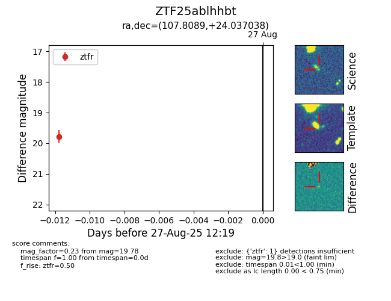

Target ZTF25ablhhbt at 2025-08-27 12:19, see:
FINK: fink-portal.org/ZTF25ablhhbt
Lasair: lasair-ztf.lsst.ac.uk/objects/ZTF25ablhhbt
ALeRCE: alerce.online/object/ZTF25ablhhbt
alt names
ZTF25ablhhbt (ztf,fink)
coordinates:
equatorial (ra, dec) = (107.8089,+24.03704)
galactic (l, b) = (193.1871,+14.82459)
photometry
last ztfr=19.78
1 ztfr detections
